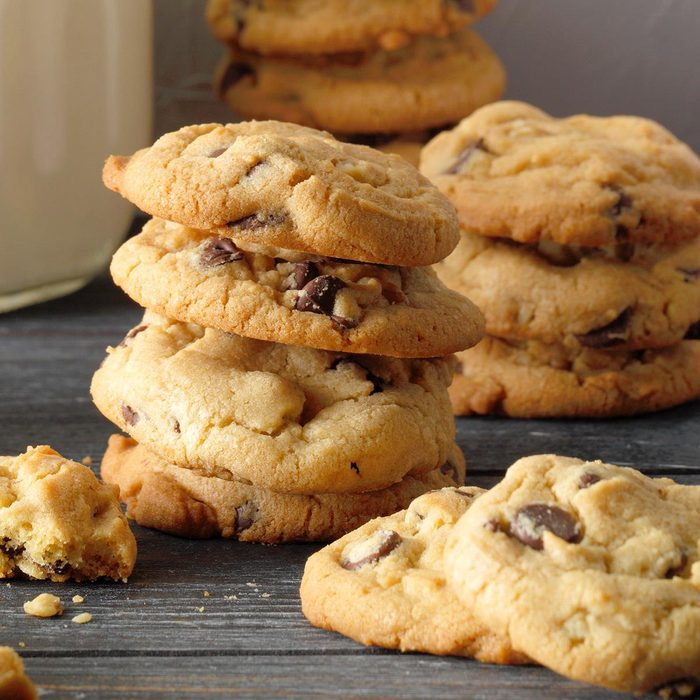

Tiramisu is an Italian dessert whose name means "pick me up" or "cheer me up". Originally it is made with finger biscuits, egg yolks, coffee, sugar, cocoa powder, and mascarpone. The biscuits are dipped into the coffee and the mixed between the othe rincredients all whipped together. But over time, there have been variations of it too. Most claim that tiramisu originated in the 1960s in Venato, Italy. However, it did not become a huge hit in the United States until the 1990s.
Egg tarts are a very famous Chinese dessert, but can also be found in many other countries around the world like Portugal and Brazil. All the dessert is just a pastry crust with an egg custard filling that is then just baked. Egg tarts most likely started out in the city of GuangZhou in China drawing inspiration from the European custard tart. And over time it's become a big hit.
A chocolate chip cookie is a drop cookie that features chocolate chips or chocolate morsels as its distinguishing ingredient. Chocolate chip cookies originated in the United States in 1938, when Ruth Graves Wakefield chopped up a Nestlé semi-sweet chocolate bar and added the chopped chocolate to a cookie recipe.Generally, the recipe starts with a dough composed of flour, butter, both brown and white sugar, semi-sweet chocolate chips, eggs, and vanilla.
